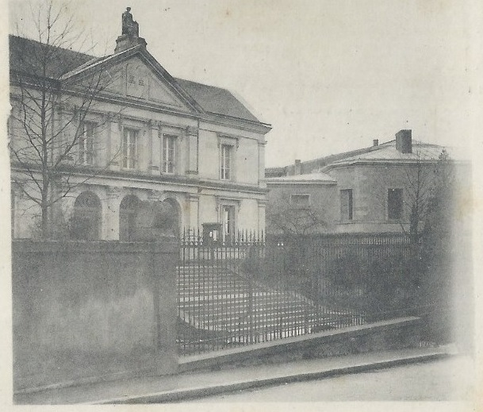
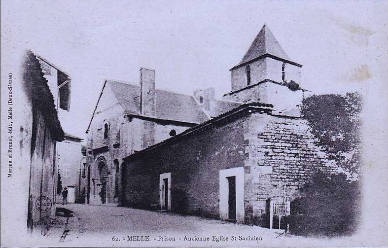
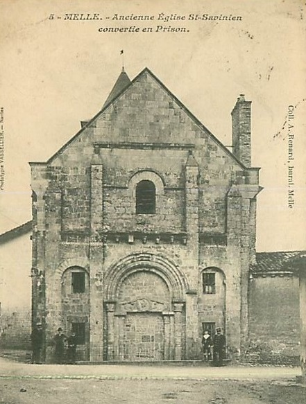
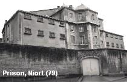
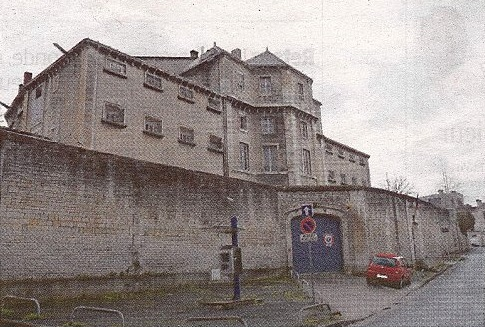
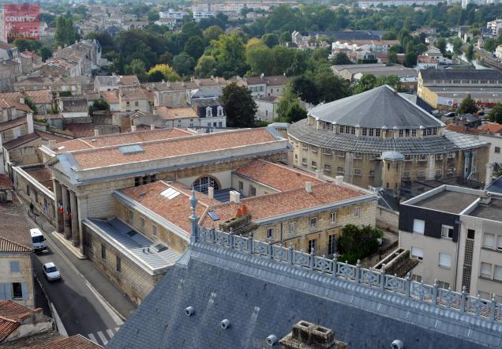

| Département | Images | Ville | Nom | Adresse | Période | Capacité | Histoire du lieu | Nombre d'exécutions |
| Deux-Sèvres (79) |  |
Bressuire | Maison d'arrêt | Rue de la prison | 1870-1926 | Remplace la prison installée dès l'an VI dans l'ancien presbytère Notre-Dame. Conçue par l'architecte Chevillard, faisant face au palais de justice, construite entre 1853 et 1870. Détruite en 1968 pour faire place à un parking. | Aucune exécution | |
| Deux-Sèvres (79) |   |
Melle | Maison d'arrêt Saint-Savinien | 2, place Saint-Savinien | 1801-1926 | Monument Historique le 30 mars 1887. Lieu de festivals de musique et d'exposition. | Aucune exécution | |
| Deux-Sèvres (79) |    |
Niort | Maison d'arrêt, de justice et de correction du Sanitat | Place du Sanitat | En service depuis 1853 | 56 places, 15 surveillants (1962) | L'idée de la prison du Sanitat remonte à 1829, quand un rapport ministériel confirme que les prisons de Niort - composées à l'époque du donjon et d'un second bâtiment - doivent être remplacées par un bâtiment neuf. Construite à l'arrière du palais de justice suivant les plans de l'architecte Pierre-Théophile Segrétain, la prison de Niort, qui devait à l'origine être en forme de croix, suit l'idée d'une prison panoptique, dite "Philadelphienne", suivant les théories de Jérémy Bentham. Dans le bâtiment en demi-cercle, les 66 cellules font toutes face à la salle de surveillance, permettant une observation idéale. Juste au-dessus de la pièce destinée aux gardiens se trouve la chapelle : les détenus peuvent entendre la messe sans quitter leur cellule. Le projet, validé en 1844, devait à l'origine coûter 141.000 francs, mais suite à des modifications des plans durant la construction, le total se chiffrera à 193.000 francs. La prison, classée monument historique depuis le 14 avril 1987, devrait fermer ses portes dans le courant de l'année 2015. | Une exécution en 1935 |
| Deux-Sèvres (79) | Parthenay | Prison de la Boucholière | 9, place Georges Picard | -1926 | Voisine du palais de justice. Formant la partie sud-ouest de la Citadelle, elle tiendrait son nom d'une métairie voisine. Formé de trois tours - La Boucholière, la tour des prisons et la tour du Corps-de-Garde -, l'endroit servit de lieu d'incarcération à compter du XVe siècle. | Aucune exécution |
{kind=link}
{kind=link}
{kind=link}
{kind=link}
{kind=link}
{kind=link}